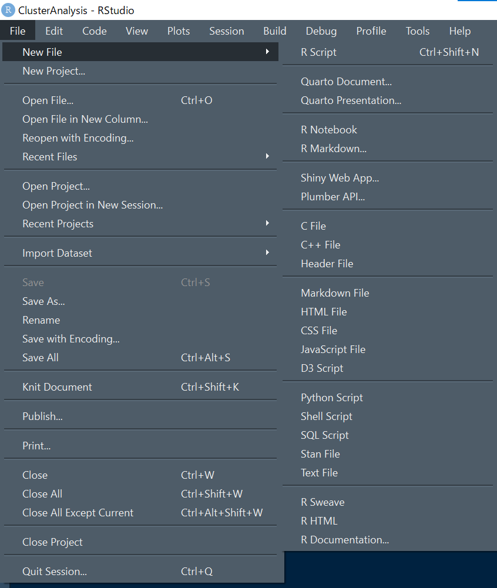
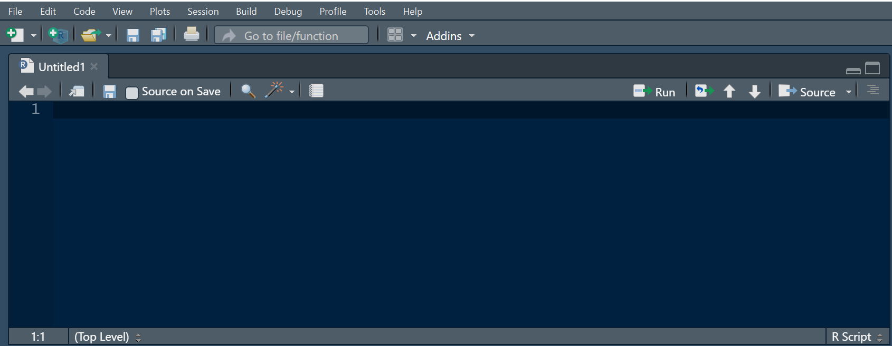

運転操作課題（曲線路単純：視野3）
例として、Sナビの運転操作課題＿視野3のデータを各対象者ごとに縦にbindして列名を付けるところまでを示します。 データの確認をしながら進められるよう、R Studioでの操作を推奨します。
まず、R Studioを開いた状態で、左上の File ⇒ New File ⇒ R Script の順にクリックします （人によってはR Markdownの方が使いやすいかもしれません）。


FIG. — R Scriptの新規作成
R Scriptをクリックすると、何も書かれていないUntitled1というエディタが出てきます。 ここに下記のコードをコピペし、Sourceボタンをクリックするだけです。
#使用するパッケージは、パッケージのインストールを簡素化するためのpacman、下処理関連のtidyverse、使っているPCのファイル参照関係の問題を解決するためのhereの３つのパッケージである．
if (!require("pacman")) install.packages("pacman")
library(pacman)
pacman::p_load(tidyverse,here)
#繰り返し処理するためのmap_dfr()関数を使用する
dat<-map_dfr(
list.files(
#hereでzipファイルが格納されているフォルダを指定
here("INSPECTIONDATA","運転操作課題"),
#pattern=は抽出したいzipファイルの名前を指定
pattern = "\\視野_3.zip$",
#full.names=はTRUEに設定することで相対ファイルパスになる、FALSEにするとファイル名だけになるので失敗する
full.names = TRUE),
#csvを読み込むための関数
~read_csv(
#unz():zipファイルを解凍し、格納されているcsvを指定するための関数、
unz(.x, "LOGGING/TaskScenarioResult.csv"),
#先頭行に項目名が含まれていないので、col_names=FALSEとする
col_names = FALSE,
#文字化け対策として設定
col_types = cols("X1" = col_character(),
"X2" = col_character()),
locale = locale(encoding = "shift-jis"))
)
#列名の設定（運転操作課題視野3の場合）
colnames(dat) <- c("測定年月日", "ID", "氏名", "年齢", "性別", "コース番号", "左誤差率", "左誤差率SD", "左誤差率変動係数", "右誤差率", "右誤差率SD", "右誤差率変動係数", "左右誤差率平均比", "左右誤差率SD比", "全体無反応数", "全体反応数", "全体反応時間", "全体反応時間SD", "全体反応時間変動係数", "左無反応数", "左反応数", "左平均反応時間", "左反応時間SD", "左反応時間変動係数","右無反応数", "右反応数", "右平均反応時間", "右反応時間SD", "右反応時間変動係数", "左右反応時間比", "左右標準偏差比","セル数縦", "セル数横", "A1成功率", "A1誤反応回数", "A1反応平均", "A2成功率", "A2誤反応回数", "A2反応平均", "A3成功率", "A3誤反応回数", "A3反応平均","A4成功率", "A4誤反応回数", "A4反応平均","A5成功率", "A5誤反応回数", "A5反応平均","A6成功率", "A6誤反応回数", "A6反応平均", "A7成功率", "A7誤反応回数", "A7反応平均", "A8成功率", "A8誤反応回数", "A8反応平均", "A9成功率", "A9誤反応回数", "A9反応平均", "B1成功率", "B1誤反応回数", "B1反応平均", "B2成功率", "B2誤反応回数", "B2反応平均", "B3成功率", "B3誤反応回数", "B3反応平均", "B4成功率", "B4誤反応回数", "B4反応平均","B5成功率", "B5誤反応回数", "B5反応平均", "B6成功率", "B6誤反応回数", "B6反応平均", "B7成功率", "B7誤反応回数", "B7反応平均", "B8成功率", "B8誤反応回数", "B8反応平均", "B9成功率", "B9誤反応回数", "B9反応平均", "C1成功率", "C1誤反応回数", "C1反応平均", "C2成功率", "C2誤反応回数", "C2反応平均", "C3成功率", "C3誤反応回数", "C3反応平均","C4成功率", "C4誤反応回数", "C4反応平均","C5成功率", "C5誤反応回数", "C5反応平均","C6成功率", "C6誤反応回数", "C6反応平均", "C7成功率", "C7誤反応回数", "C7反応平均", "C8成功率", "C8誤反応回数", "C8反応平均", "C9成功率", "C9誤反応回数", "C9反応平均", "誤反応左右", "誤反応左", "誤反応右", "平均反応時間左右", "平均反応時間左", "平均反応時間右", "標準偏差左右", "標準偏差左", "標準偏差右", "変動係数左右", "変動係数左", "変動係数右", "左右反応時間比", "左右標準偏差比", "誤差平均値左", "誤差平均値右", "車線標準偏差左", "車線標準偏差右", "車線変動係数左", "車線変動係数右", "左右誤差率平均比", "車線標準偏差比")
# datを確認すると、デフォルトのままでは反応時間NAのはずが、0.000000になっているので置換する
dat<-dat %>% mutate_at(vars(ends_with("反応平均")),na_if,0.000000)
# 性別データが0，1になっているので、男性=>0、女性=>1となるように変換する
dat<-mutate(dat,性別=str_replace_all(性別,pattern=c("1"="女性","0"="男性"))) %>%
mutate_at(vars(ends_with("反応平均")),na_if,0.00000)
# A4~A6,B5,C4~C6のデータは計測していないのでNAに置換
dat<-dat %>%
mutate_at(vars(matches(c("A4","A5","A6","B5","C4","C5","C6"))),na_if,0) %>%
mutate_at(vars(matches(c("A4","A5","A6","B5","C4","C5","C6"))),na_if,-1)
datここまでで dat 内に運転操作課題＿視野3（曲線路単純）のデータが格納されます。 モニターしていただいた方の環境では、約170名分のデータを3分かからず抽出できました。
反応検査
反応検査（単純反応・選択反応・ハンドル操作・注意配分複数作業）は「反応検査印刷データ」フォルダから読み込みます。 csvファイル名の末尾番号が課題を示します（11=単純反応、12=選択反応、13=ハンドル操作、14=注意配分）。 以下、課題別のコードです（パッケージ読み込みは上記コード実行済みが前提）。
単純反応検査
library(tidyverse)
dat5<-map_dfr(
list.files(
here("INSPECTIONDATA","反応検査印刷データ"), #反応検査データが格納されているフォルダを指定
pattern = "11\\.csv$", #抽出したいcsvファイルを指定、「11」は単純反応を示す
full.names = TRUE,
recursive = TRUE),
#full.names=はTRUEに設定することで相対ファイルパスになる、FALSEにするとファイル名だけになるので失敗する
~read_csv(.x, #読み込むための関数
col_names = FALSE,#先頭行に項目名が含まれてないので、col_names=FALSEとする
col_types = cols("X1" = col_character(),
"X2" = col_character()),
#識別番号に0000や0001と入力していたりすると、文字データとして認識されてエラーを起こすのでcol_character()に指定しておく
locale = locale(encoding = "shift-jis")) #文字化け対策として設定
)
simple_react<- c("測定日時","ID","名前","年齢","性別","コース番号","反応時間ランク同年代比","反応時間SDランク同年代比","反応時間ランク30to59比","反応時間SDランク30to59比","平均反応時間","反応時間SD","失敗回数","アクセルリリース時間90%1","アクセルリリース時間90%2",
"アクセルリリース時間90%3","アクセルリリース時間90%4","アクセルリリース時間90%5","アクセルリリース時間90%6","アクセルリリース時間90%7","アクセルリリース時間90%8","アクセルリリース時間90%9","アクセルリリース時間90%10","アクセルリリース時間90%11","アクセルリリース時間90%12","アクセルリリース時間90%13","アクセルリリース時間90%14","アクセルリリース時間90%15","アクセルリリース時間90%16","アクセルリリース時間90%17","アクセルリリース時間90%18","アクセルリリース時間90%19","アクセルリリース時間90%20","アクセルリリース時間90%21","アクセルリリース時間90%22","アクセルリリース時間90%23","アクセルリリース時間90%24","アクセルリリース時間90%25","アクセルリリース時間90%26","アクセルリリース時間90%27","アクセルリリース時間90%28","アクセルリリース時間90%29","アクセルリリース時間90%30","アクセルリリース時間90%31","アクセルリリース時間90%32","アクセルリリース時間90%33","アクセルリリース時間90%34","アクセルリリース時間90%35","反応時間最大","反応時間最少","アクセルリリース時間10%1","アクセルリリース時間10%2","アクセルリリース時間10%3","アクセルリリース時間10%4","アクセルリリース時間10%5","アクセルリリース時間10%6","アクセルリリース時間10%7","アクセルリリース時間10%8","アクセルリリース時間10%9","アクセルリリース時間10%10","アクセルリリース時間10%11","アクセルリリース時間10%12","アクセルリリース時間10%13","アクセルリリース時間10%14","アクセルリリース時間10%15","アクセルリリース時間10%16","アクセルリリース時間10%17","アクセルリリース時間10%18","アクセルリリース時間10%19","アクセルリリース時間10%20","アクセルリリース時間10%21","アクセルリリース時間10%22","アクセルリリース時間10%23","アクセルリリース時間10%24","アクセルリリース時間10%25","アクセルリリース時間10%26","アクセルリリース時間10%27","アクセルリリース時間10%28","アクセルリリース時間10%29","アクセルリリース時間10%30","アクセルリリース時間10%31","アクセルリリース時間10%32","アクセルリリース時間10%33","アクセルリリース時間10%34","アクセルリリース時間10%35")
colnames(dat5)<-simple_react選択反応課題
dat6<-map_dfr(
list.files(
here("INSPECTIONDATA","反応検査印刷データ"), #反応検査データが格納されているフォルダを指定
pattern = "12\\.csv$", #抽出したいcsvファイルを指定、「12」は選択反応を示す
full.names = TRUE,
recursive = TRUE), #full.names=はTRUEに設定することで相対ファイルパスになる、FALSEにするとファイル名だけになるので失敗する
~read_csv(.x, #読み込むための関数
col_names = FALSE,#先頭行に項目名が含まれてないので、col_names=FALSEとする
col_types = cols("X1" = col_character(),
"X2" = col_character()),
#識別番号に0000や0001と入力していたりすると、文字データとして認識されてエラーを起こすのでcol_character()に指定しておく
locale = locale(encoding = "shift-jis")) #文字化け対策として設定
)
selective_react<- c("測定日時","ID","名前","年齢","性別","コース番号","反応時間ランク同年代比","反応時間SDランク同年代比","誤反応ランク同年代比","判断の速さランク同年代比","反応時間ランク30to59比","反応時間SDランク30to59比","誤反応ランク30to90比","判断の速さランク30to59比","平均反応時間","反応時間SD","誤反応回数","黄色ランプと単純反応の時間差","赤ランプ反応時間10%以上1","赤ランプ反応時間10%以上2","赤ランプ反応時間10%以上3","赤ランプ反応時間10%以上4","赤ランプ反応時間10%以上5","赤ランプ反応時間10%以上6","赤ランプ反応時間10%以上7","赤ランプ反応時間10%以上8","赤ランプ反応時間10%以上9","赤ランプ反応時間10%以上10","赤ランプ反応時間最大値","赤ランプ反応時間最小値","赤ランプ反応時間平均値","赤ランプ反応時間SD","黄ランプ反応時間90%以上1","黄ランプ反応時間90%以上2","黄ランプ反応時間90%以上3","黄ランプ反応時間90%以上4","黄ランプ反応時間90%以上5","黄ランプ反応時間90%以上6","黄ランプ反応時間90%以上7","黄ランプ反応時間90%以上8","黄ランプ反応時間90%以上9","黄ランプ反応時間90%以上10","黄ランプ反応時間90%以上11","黄ランプ反応時間90%以上12","黄ランプ反応時間90%以上13","黄ランプ反応時間90%以上14","黄ランプ反応時間90%以上15","黄ランプ反応時間90%以上16","黄ランプ反応時間90%以上17","黄ランプ反応時間90%以上18","黄ランプ反応時間90%以上19","黄ランプ反応時間90%以上20","黄ランプ反応時間最大値","黄ランプ反応時間最小値","黄ランプ反応時間平均値","黄ランプ反応時間SD","黄ランプ反応時間10%以上1","黄ランプ反応時間10%以上2","黄ランプ反応時間10%以上3","黄ランプ反応時間10%以上4","黄ランプ反応時間10%以上5","黄ランプ反応時間10%以上6","黄ランプ反応時間10%以上7","黄ランプ反応時間10%以上8","黄ランプ反応時間10%以上9","黄ランプ反応時間10%以上10","黄ランプ反応時間10%以上11","黄ランプ反応時間10%以上12","黄ランプ反応時間10%以上13","黄ランプ反応時間10%以上14","黄ランプ反応時間10%以上15","黄ランプ反応時間10%以上16","黄ランプ反応時間10%以上17","黄ランプ反応時間10%以上18","黄ランプ反応時間10%以上19","黄ランプ反応時間10%以上20")
colnames(dat6)<-selective_reactハンドル操作課題
コードが長いため、全文はダウンロードファイルをご覧ください（構造は他の反応検査と同じで、pattern を「13\\.csv$」に、列名ベクトルをハンドル操作用に変えたものです）。
dat7<-map_dfr(
list.files(
here("INSPECTIONDATA","反応検査印刷データ"), #反応検査データが格納されているフォルダを指定
pattern = "13\\.csv$", #抽出したいcsvファイルを指定、「13」はハンドル操作を示す
full.names = TRUE,
recursive = TRUE),
~read_csv(.x,
col_names = FALSE,
col_types = cols("X1" = col_character(),
"X2" = col_character()),
locale = locale(encoding = "shift-jis"))
)
# 列名ベクトル steering（全152列）は .R ファイル参照
colnames(dat7)<-steering注意配分・複数作業検査
dat8<-map_dfr(
list.files(
here("INSPECTIONDATA","反応検査印刷データ"), #反応検査データが格納されているフォルダを指定
pattern = "14\\.csv$", #抽出したいcsvファイルを指定、「14」は注意配分・複数作業を示す
full.names = TRUE,
recursive = TRUE),
~read_csv(.x,
col_names = FALSE,
col_types = cols("X1" = col_character(),
"X2" = col_character()),
locale = locale(encoding = "shift-jis"))
)
# 列名ベクトル attention_divided（全124列）は .R ファイル参照
colnames(dat8)<-attention_divided総合学習体験
dat4<-map_dfr(
list.files(
here("INSPECTIONDATA","総合学習体験印刷データ"),
#zipファイルが格納されているフォルダを指定
pattern = "\\.csv$", #pattern=は抽出したいzipファイルの名前を指定
full.names = TRUE,
recursive = TRUE), #full.names=はTRUEに設定することで相対ファイルパスになる、FALSEにするとファイル名だけになるので失敗する
~read_csv(.x, #読み込むための関数
col_names = FALSE,#先頭行に項目名が含まれてないので、col_names=FALSEとする
col_types = cols("X2" = col_character() ),
#識別番号に0000や0001と入力していたりすると、エラーを起こすのでcol_character()に指定しておく
locale = locale(encoding = "shift-jis")) #文字化け対策として設定
)
# 列名ベクトル general_learn（全69列）は .R ファイル参照
colnames(dat4)<-general_learn
dat4<-dat4 %>% dplyr::select(general_learn)危険予測体験
危険予測体験のデータセット作成は他とは異なり、非常にややこしい手順を踏むので注意が必要です。 Rからzipファイルを一気に読み込むのではなく、一度PCでzipファイルを全て解凍する必要があります。
- 解凍・展開したzipファイルの中身を格納するためのフォルダ（展開フォルダ）を作成
- 展開フォルダ内に、下記コードをメモ帳にコピペして保存し、拡張子を .txt から .bat に変更したバッチファイルを作成
- 展開フォルダ内に全zipファイルをコピー＆ペースト
- 全zipファイルのコピーをバッチファイルにドラッグ＆ドロップ
- 自動的に解凍・展開されたフォルダが展開フォルダ内に出力される
- 全て展開されたら、展開フォルダ内のzipファイルコピーは削除する（消し忘れるとRでエラーになるため）
@echo off
:loop
if "%~1" == "" goto end
if "%~x1" == ".zip" (powershell expand-archive %1 %~p1%~n1 -Force)
shift
goto loop
:end参考HP：複数のzipファイルを一括で展開する方法
すべて展開されればRの出番です。
dat2<-map_dfr(
list.files(
here("INSPECTIONDATA","危険予測体験/展開"),
#INSPECTIONDATAフォルダ内のbatで展開したフォルダが格納されているフォルダを指定
pattern = "危険予測体験\\(上級\\)_01",
#pattern=は抽出したいファイルの名前のキーワードを指定「***********_ID_上級_1」などで格納されている．初・中・上級とコース番号を指定
#「(」と「)」の前には「\\」を入れておくこと
full.names = TRUE,
recursive = TRUE),
#下位フォルダも含めて検索
~read_csv(.x, #読み込むための関数
col_names = TRUE, #先頭行に項目名が含まれているので、col_names=TRUEとする
locale = locale(encoding = "shift-jis"))#文字化け対策として設定
)
lf <- list.files( #ここはID番号を作るためのコード
here("INSPECTIONDATA","危険予測体験/展開"), #INSPECTIONDATAフォルダとbatで展開したフォルダが格納されているフォルダを指定
pattern = "危険予測体験\\(上級\\)_01", #pattern=は抽出したいフォルダの名前を指定
full.names = TRUE,
recursive = TRUE) %>%
as.data.frame()
a<-str_split(lf$.,"_") %>%
as.data.frame() %>%
t() %>%
as.data.frame()
dat3<-bind_cols(a$V2,dat2)
dat3<-rename(dat3,ID=...1)